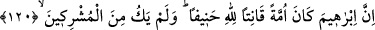
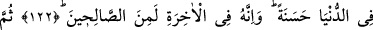
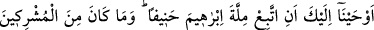

İBRAHİM DÎNİ
120. İbrahim, gerçekten Hakk’a yönelen, Allah’a itaat eden bir önder idi; Allah’a
ortak koşanlardan değildi.
121. Allah’ın nimetlerine şükrediciydi. Çünkü Allah, onu seçmiş ve doğru yola
iletmişti.
122. Ona dünyada güzellik verdik. Muhakkak ki o, ahirette de sâlihlerdendir.
123. Sonra da sana: “Doğru yola yönelerek İbrahim’in dinine uy! O müşriklerden
değildi” diye vahyettik.
“İbrahim, gerçekten Hakk’a yönelen,” bütün bâtıl dinleri terk edip hak dine yönelen,
emrini ayakta tutarak “Allah’a itaat eden bir önder idi” Neredeyse büyük bir ümmette
dağınık olarak zor bulunacak beşerî fazîletlere sâhip tek başına bir ümmetti. Nitekim
denilmiştir ki:
Allah hakkında garipsenecek bir şey değildir
Bütün bir âlemi bir kişide toplaması.
Ey cananım sen bir dânesin, fakat senin zatın
Cümle kemâlâtın eserleri senin zâtında toplanmıştır.
el-Mesâbîh’ta da geçtiği üzere bir hadiste de şöyle buyrulmuştur: “Hüseyin,
“esbat’tan biridir.”[217] O, tek başına bir ümmetin yerine kâim olan ümmetlerden
biridir. Ya da: Ondan bir çok dallar ayrılacaktır. Çünkü seyyidler, Zeyne’l-âbidîn b.
Hüseyin (r.a.)’ın neslinden çoğalmışlardır. Dolayısıyla zamanımızda bazı müfterîlerin
iddia ettiği gibi hadiste Hz. Hüseyin’in peygamberliğine delil yoktur. Bundan Allah’a
sığınırız. Kim peygamberimizden sonra bir peygamber olduğunu söylerse kâfir olmuş
olur. Nitekim Bahru’l-ulûm’da böyle geçmektedir.
Ümmet kelimesinin “me’mûm”, yâni kendisine uyulan mânâsında olduğu da
söylenmiştir. Buna göre mânâ, insanlar ona uyar, hayır ve ilim öğrenmek için ona
yönelirler. İnsanlara hayrı öğreten de dinde imamdır. İbrahim (a.s.) tevhid ehlinin reisi,